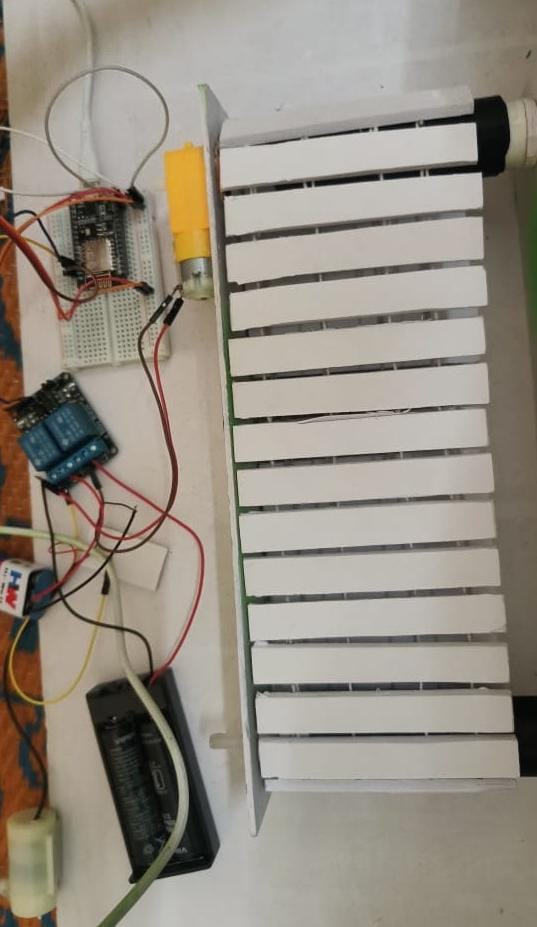

Team Lead
Patent Work in Progress
Edible Coating Solution with Automatic Applying Machine
Developed a natural, biodegradable edible coating formulated from jackfruit peel waste to dramatically extend post-harvest shelf life and preserve moisture in fresh fruits. Concurrently engineered a functional conveyor-driven automatic applying machine utilizing microcontroller timing, motorized rollers, and misting nozzles for continuous, uniform surface application.
- Provisional Indian Patent process initiated for formulation and applicator
- Paper currently in preparation for IEEE publication